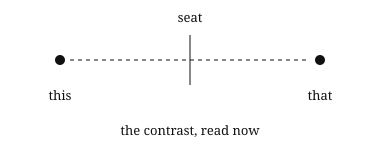

Answers in the grammar of Now as Relative-To.

The now. It is the slice an orientation reads as Δt = 0. It is a relative-to, not a moment on a line. Every contrast is read against it.
The facing of one separation. The mark is the separation Δx. The canvas is the span, cΔt, the distance light spans in the interval. Where ρ ≤ 1 the separation is within reach. Where ρ > 1 it is beyond reach. ρ is invariant under a change of seat.
ρ is a magnitude. It is the same for Δt and −Δt. It gives reach, not order. Orientation offers the sign. The grammar does not derive the arrow.
A later mark is not read as produced by an earlier one. Causality, if the word is wanted, is the now's: a rate held across seats and continued. The law is declined.

As a held rate. Canvas: the interval. Rate: the room's rate, read from freefall. Mark: the distance fallen, s = ½gt². g is a label after the reading. The continuation stops where a second rate, drag, enters.

As a closed relative-to. One full turn at 1 AU is one year. With the year as the unit of time and the AU as the unit of distance, the tally the room returns is K = v²r = 4π². It is not fetched. No mass, no G. It is closed in that the engagement meets itself after the full facing: the year tally returns K = 4π². It is open in that the rate is held, not produced from a prior. The constant is the relative-to that persists across the seats.
This and not that does not disregard this or that. The contrast or the negotiation is what is now. This time not that time is now. Earlier and later remain the two ends of the interval; what is read at the seat is their contrast. The now does not replace the past; it is the reading in which they are already negotiated.
Nothing in the reading. They are labels after: names the reading does not need. No mass is isolated, no force is yielded, no G is seated as a prior.
Distance scaled. Time is not a dimension beside distance. It is the canvas a separation is read against. The contrast of two times is a time. No instant stands alone.
A naming of the canvas and the mark before the ratio is read. 360, 2π, 400 and 1 are seats for one whole. The seat changes the label and the number of steps, not the whole and not the relation.
What a mark is read against. For the now it is the span, cΔt. No interval can be seated without a named canvas.
What is read: a fraction of a whole, ρ = mark/whole. Every claim also ends with a mark: the reading that would separate it.
ρ ≤ 1. Within reach, order holds across orientations. Beyond reach, order is offered by the orientation alone.
No. The rows are the same under both paths. The paper claims the path is open, not that the other is false. The reading is offered.
More questions: bring them to the author. Answers stay in the same terms.